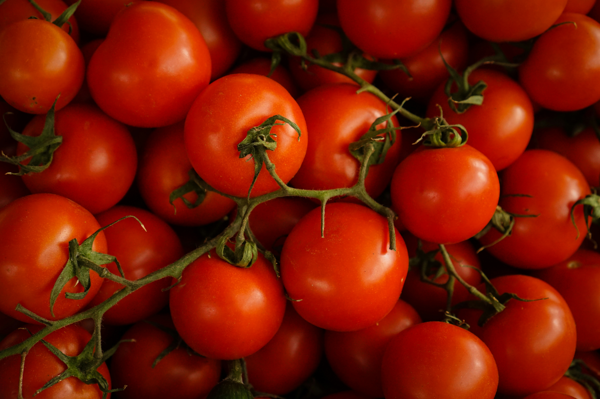
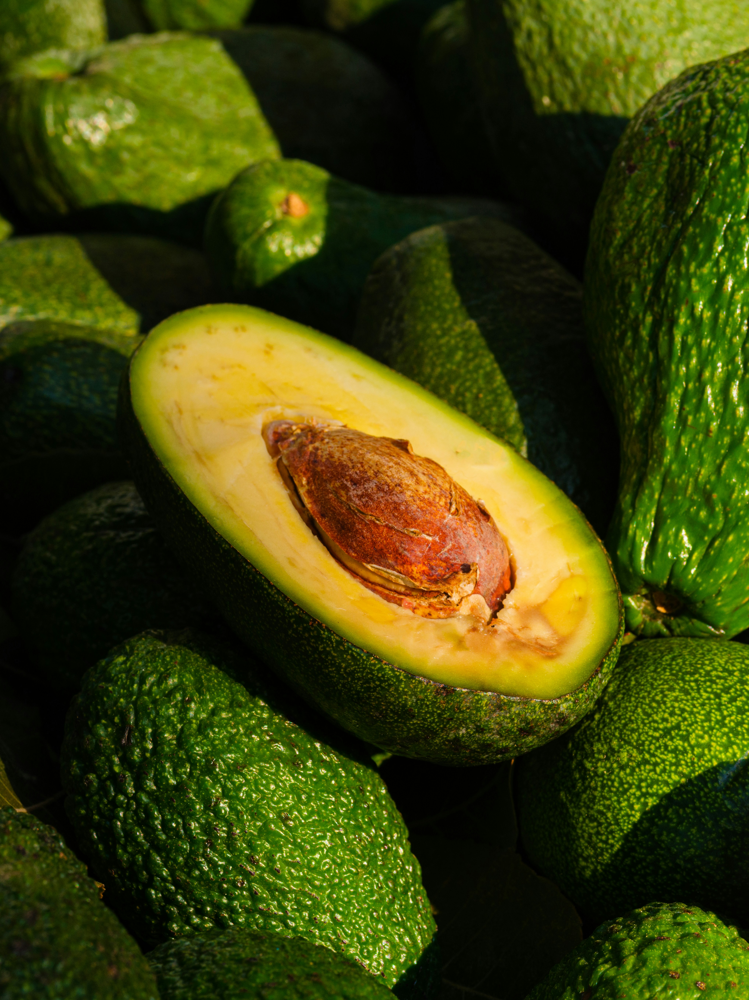

FROM OUR LOCAL FARMERS
Fresh Harvest
Discover nature's finest produce, freshly harvested and delivered directly from local farms.



GROWING TOGETHER, CONNECTING MARKETS
Connecting local farmers with buyers through fresh produce, trusted partnerships, and sustainable agricultural opportunities.
View Produce →Supporting Local Farmers • Delivering Freshness
FROM OUR LOCAL FARMERS
Discover nature's finest produce, freshly harvested and delivered directly from local farms.


MEET OUR LOCAL HEROES
Meet the people behind your fresh and healthy food.

📍 Musanze, Rwanda
Jean Claude is a passionate local farmer dedicated to growing fresh, healthy and sustainable produce. With over 10 years of farming experience, he supplies quality vegetables and fruits to local markets.
Years Experience
Happy Buyers
Farmer Rating